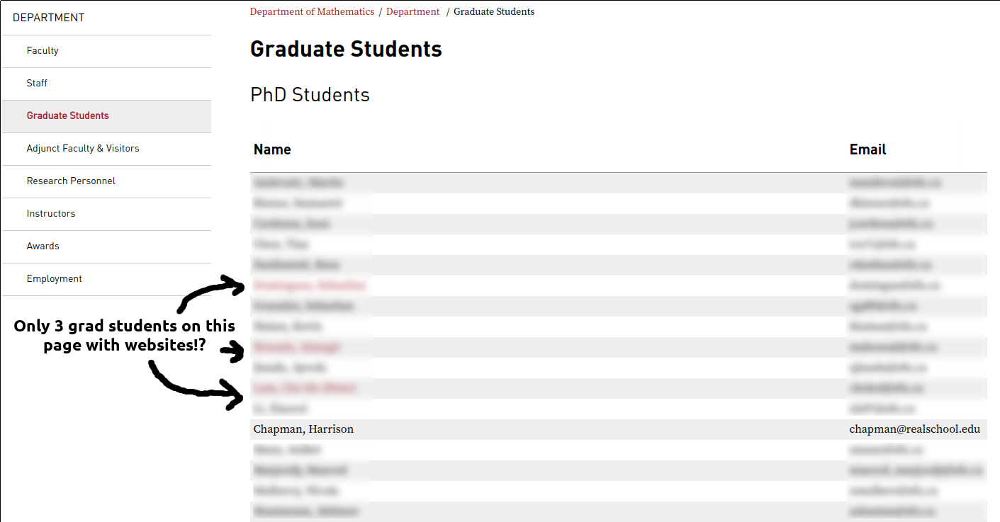
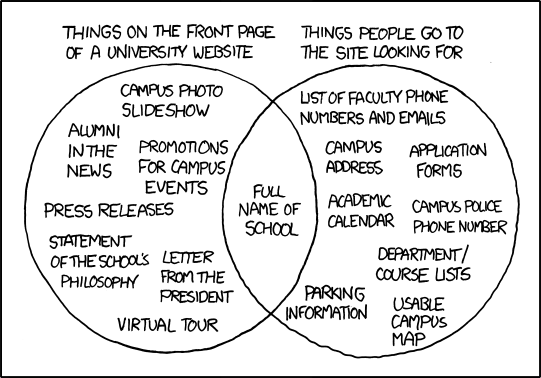

Every mathematician should have a website.
If I meet you at a conference and we chat, I'm going to search you.
"[Your name] math."
Every mathematician should have a website.
Failing that, I'll try looking for you at your
department's list of people.
You also don't want this:

Why have a website? For others:
A website is a business card & CV for the modern era.
- Background and position
- Contact information
- Research interests and experience
- Teaching experience
- Professional experience
Why have a website? For students:
Your website is a useful resource for your students
- Personal information to "humanize" you
- Course information and material
- Prior course materials (extra materials?)
- Research interests (undergrad summary/questions)
Why have a website? For you:
A website is a central place for you to keep and share things.
- Application materials
- Talk slides
- Lecture notes
- Research materials
So what should be on a website?

(Source: xkcd 773; I know it's not 100% relevant)
Common components?
- Professional information: Current and previous positions
- Contact information: Name, email, office, (phone number, address)
- Background and professional summary
- Links to CV, Resume, Google Scholar, etc.
- Photograph
- Research interests
- Teaching information and interests
- Seminar organization and participation
- Outreach
- Interesting research figures
- Publication information
- Previous talk titles and slides
- Others?
Some ways to make a website...
- WYSIWYG site editors
- Raw HTML/CSS/JS markup
- Static site generators
- Dynamic site generators
- Others?
I have varying levels of experience with each method but am happy to work with you to figure out any
WYSIWYG site editors
Examples: Google Sites, Weebly, Wix, etc.
Advantages:
- Often web-based tools nowadays
- Easy to get started
- Easy to design
- Many free options, with free hosting
Disadvantages:
- No fine-grained control
- Free may mean ads or other clutter
- Possible to export and reuse?
- Limited hosting options
- Harrison has no clue how they work
Raw HTML/CSS/JS markup
Advantages:
- Total control over design and hosting
- Can start editing with any text-editor
- Easy to host on CSU Math web servers*
Disadvantages:
- Have to learn languages HTML, CSS, (JS)
- Have to find own hosting
- Can be exhausting to have common navigation across website: Little-to-no markup reuse across pages
Static site generators
Example: Jekyll (free hosting on Github)
- Templates (free or self-made) easy to use across site
- After initial setup, write pages in Markdown or HTML
- Site generator outputs HTML, etc. that can be hosted on any simple server
- Easy, e.g., to blog even though output is static
Disadvantages:
- Might have to learn some HTML, CSS, (JS)
- Have to find own hosting (Github, CSU math* are options)
- No dynamic features like databases, Python/PHP
Dynamic site generators
Examples: Wordpress, Django, Drupal etc.
Advantages:
- Some templates, free design tools exist
- After setup, may be easy to make/edit pages
- Dynamic means you can make use of databases
Disadvantages:
- Limited hosting options (Wordpress hosting, own server needs setup)
- Might have to learn Python, PHP, etc., to make best use
- Harrison thinks this is overkill for most basic websites
An important consideration
You may want to think about purchasing a domain name or using hosting that you can use after you leave CSU.
This goes for emails, too, for some communication! (I got burned by my UGA email years ago...)
Once you've made a webpage
You want your website listed on the CSU math directory!
This should be automatic if you're hosting on CSU math's servers. Otherwise, nicely ask Bryan over email to set this up for you!
An example: Harrison's website
I maintain a website using Jekyll, a static site generator. My website is currently hosted on Github, and I purchased a domain "hchapman.org" for it.
Website
Source code
Thanks!
If you need any help making a website or have any extra questions, don't be afraid to contact me.